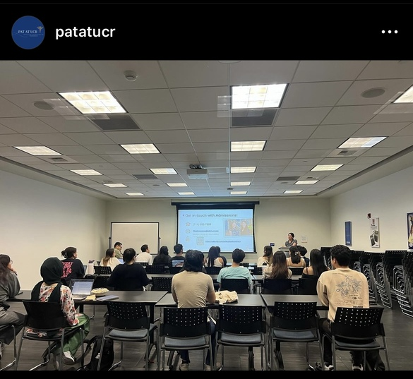
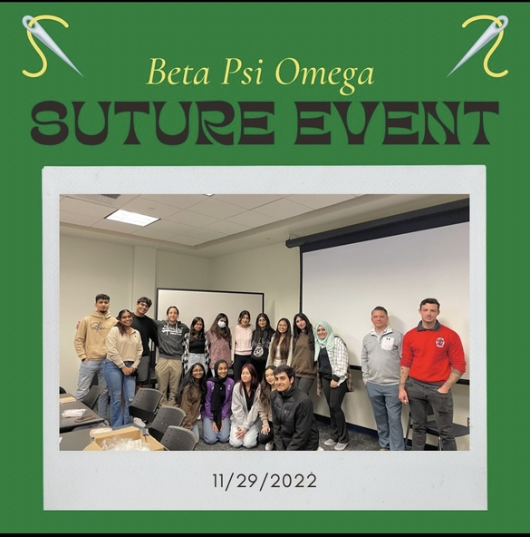
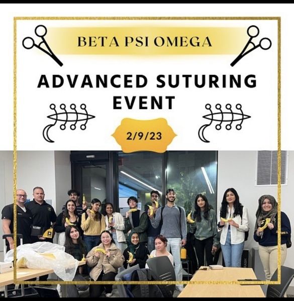
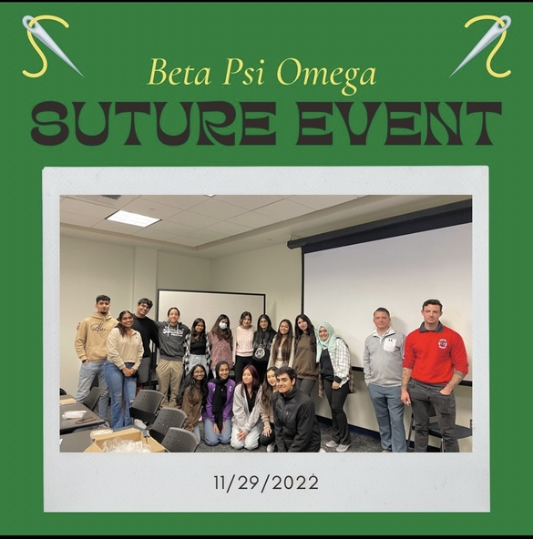
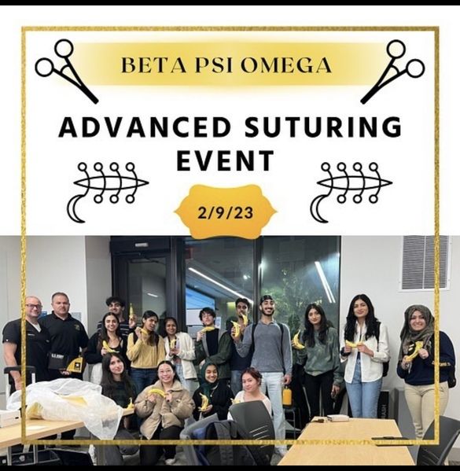

Trang Duong
My name is Trang Duong and I'm an undergraduate micribiologist currently studying at the University of California, Riverside.
I am a highly organized and hard-working individual who's seeking to secure an entry-level research internship to begin my career and fully utilize my skills.
As part of my preparation for applying to PA programs after graduation, I am currently working towards my EMT certification.
Experience
Boba-Barista
• Maintained and operated boba machines, blenders and other equipment while making and serving beverages with speed, accuracy and consistency.
• Greeted customers with outstanding customer service by being open to help in all manners.
• Kept track of inventory in the back to prevent inefficiencies and delays while staying organized, and led operations in opening/closing shifts.
Volunteer in Emergency Department
• My responsibilities include but are not limited to — check in visitors as they enter the pediatrics unit and educate visitors on proper infection control precautions, transport patients upon discharge, and assist with feeding infants
• Using my excellent hearing and visual skills to follow directions in preparing examination rooms for patients, stocking medical supplies and linens, assisting receptionist in Emergency Room Desk and escorting patients from waiting areas and evaluation rooms
General Member
• General member of Beta Psi Omega, a Co-Ed Biology Fraternity
• Participated in suture workshops and guest speakers in the medical field.
• Networked with various individuals while creating sister and brotherhood bonds with other fraternity members.
Education
UC Riverside
Portfolio




 